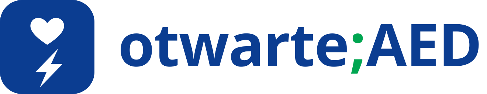

Szanowni Państwo,
wójtowie, burmistrzowie i prezydenci miast, komendanci PSP i prezesi OSP, dyrektorzy szkół, szpitali i instytucji publicznych
Przy nagłym zatrzymaniu krążenia każda minuta bez defibrylacji zmniejsza szansę na przeżycie. Defibrylatora AED może użyć każdy, ale tylko wtedy, gdy wie, gdzie on jest. Dziś nie ma jednej, potwierdzonej listy AED w Polsce: na portalu dane.gov.pl dane o swoich urządzeniach publikuje zaledwie kilka miast.
Akcja otwarte AED zachęca dysponentów defibrylatorów, czyli Państwa, do opublikowania danych o urządzeniach w jednolitym formacie na dane.gov.pl. Tylko dysponent może potwierdzić, że urządzenie jest na miejscu, gdzie dokładnie wisi i kiedy jest dostępne.
Co zyskujecie: Wasze AED są widoczne na dane.gov.pl, w zbiorze ogólnopolskim i na mapie dla mieszkańców gdzieaed.pl, z oznaczeniem „potwierdzone przez dysponenta”. Na stronie możecie umieścić odznakę „Publikujemy dane o AED na dane.gov.pl”.
Czego nie robimy: nikogo nie zmuszamy i nie prosimy o zgłaszanie cudzych urządzeń. Publikujecie tylko dane o defibrylatorach, którymi dysponujecie.
Z wyrazami szacunku
podpis